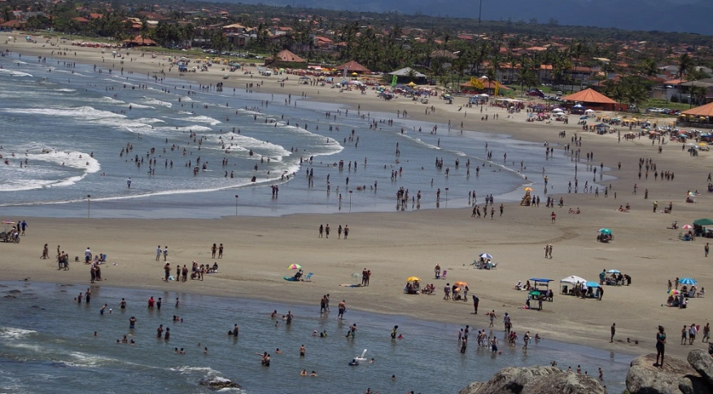

Rússia reconhece Zelensky como líder da Ucrânia e diz estar pronta para negociar
O ministro das Relações Exteriores da Rússia, Sergei Lavrov, disse nesta quarta-feira (2)
Ver notícia completa

Tubarão é empurrado de volta ao mar por banhista em praia de SP
Um tubarão de aproximadamente dois metros de comprimento ficou próximo
Ver notícia completaBolsonaro edita MP com R$ 479 milhões para áreas atingidas pelas chuvas
O presidente Jair Bolsonaro (PL) editou uma Medida Provisória que dispõe R$ 479,8
Ver notícia completa